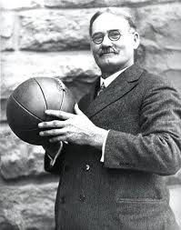
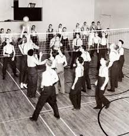
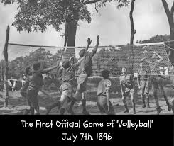
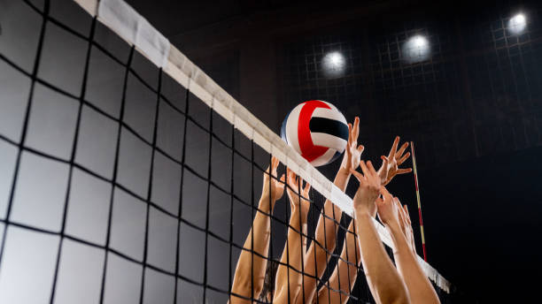

| Student Name: | Shana Tonn |
| School Name: | Devon Christian School |
| Class: | Computer Class of 2026 |

Volleyball is interesting. Here is one fact: Volleyball was invented in 1895 by William G. Morgan in Holyoke, Massachusetts. Here is another fact: The longest volleyball game lasted 82 hours.



Did you know that a volleyball player will jump roughly 300 times during a match? I love Volleyball! The setter is also known as the "quarterback" in volleyball!
The worlds best male volleyball player, Wilfredo Leon from Poland, says "I only prepare to win gold, not for silver or bronze. I train to win and winning leads you to gold!
Volleyball was introduced into Europe by American troops during World War I, when national organizations were formed. The Fédération Internationale de Volley Ball (FIVB) was organized in Paris in 1947 and moved to Lausanne, Switzerland, in 1984. The USVBA was one of the 13 charter members of the FIVB, whose membership grew to more than 210 member countries by the late 20th century.
The ball came from basketball, the net from tennis and the use of hands from handball. While this made up a game of volleyball, it was lent some competitive tone with the introduction of innings - later to be called sets - that was borrowed from baseball.

You Spend Most of Your Time Active. Even if you don’t touch the ball every time it’s on your side of the court, you’re moving constantly to be in proper position.
You Get to Jump…a lot! Going up for a block? You jump. Attacking? Jump? Serving? You certainly can jump. You Improve Your Reaction Time. Volleyball is a fast-paced sport, and you have plenty of opportunities to improve your forearm/eye and hand/eye coordination.
You Get to Play Offense and Defense. While volleyball does have set positions, every player on the court has to be good at several things. Middle blockers don’t only block, hitters don’t only attack, and liberos even do more than just pass.
There’s a Lot to Celebrate. Every time the ball is put into play, a team scores a point, meaning there’s a lot of points your team gets to enjoy. Didn’t win it? The team gathers anyway to encourage each other in the next one.
You Can Play With Anyone. Volleyball’s a non-contact sport, so you’re not stuck with playing only with only one gender or only those your age. Mix-gendered competition has resulted in countless fun matches, and facing older players allows you to see different types of attacks and improve even more quickly.
You Can Play Anywhere. Grass, sand, a court or snow, you can play volleyball on any surface. The different environmental factors will just make your game that much more well-rounded.
No Standing Required. Sitting volleyball, the Paralympic variant of indoor volleyball, only has four core rule differences and can actually help your standing skills as it’s actually faster-paced. Plus, sitting volleyball allows more people to play the sport, and more volleyball players is always a good thing!.

 alt="How do you play Volleyball?">
alt="How do you play Volleyball?">